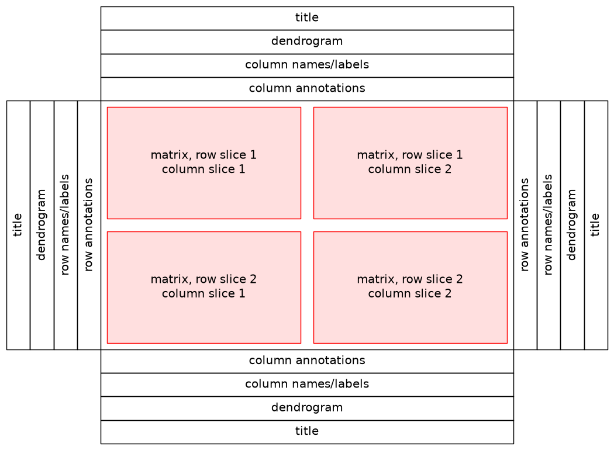
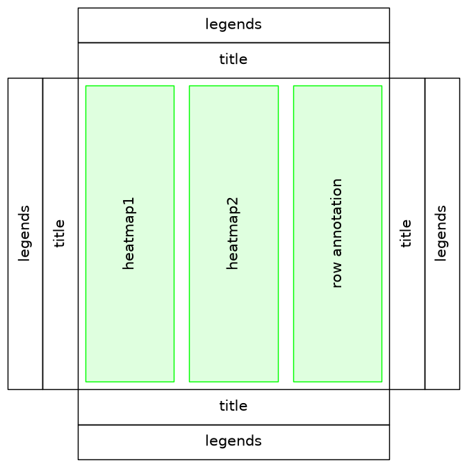
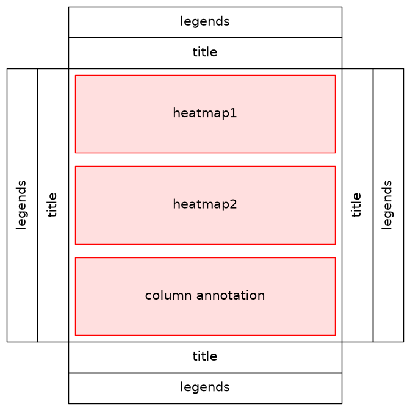

1 Introduction#
Complex heatmaps are efficient for visualizing associations across
multiple sources of data sets and revealing potential patterns. ComplexHeatmap-py
(https://github.com/zhanxw/ComplexHeatmap-py) provides a
highly flexible, object-oriented framework in Python to arrange multiple
heatmaps and support rich built-in as well as self-defined annotation
graphics.
1.1 General design#
A single heatmap is composed of the heatmap body and surrounding heatmap components. The heatmap body can be split by rows and columns into multiple slices. The heatmap components are titles, dendrograms, row/column names or labels, and heatmap annotations, which can be placed on any of the four sides of the heatmap body. All heatmap components are automatically reordered or split according to the heatmap body.

A heatmap list (HeatmapList) is the
concatenation of a list of heatmaps and standalone heatmap annotations.
Surrounding the heatmap list, there are global-level titles and packed
heatmap/annotation legends.
One central design principle of a horizontal heatmap list is that rows across all heatmaps and row annotations are adjusted simultaneously so that the same row in every heatmap and annotation corresponds to the exact same feature.

Heatmaps and column annotations can also be concatenated vertically
(using %v% or /), in which case columns across
all heatmaps and column annotations are aligned to the same samples or
observations.

A heatmap list can likewise be split by rows (in horizontal mode) or by columns (in vertical mode) according to the main heatmap.
ComplexHeatmap-py mirrors the object-oriented class hierarchy of the R package:
Heatmap: represents a single heatmap containing the matrix body, row/column names, titles, dendrograms, and attached top/bottom/left/right annotations.HeatmapList: represents a horizontal (+) or vertical (%v%//) list of heatmaps and standaloneHeatmapAnnotationobjects, together with global titles and legends.HeatmapAnnotation: defines a stack of row annotations (rowAnnotation(...)orwhich="row") or column annotations (HeatmapAnnotation(...)orwhich="column"). Annotations can serve as components of aHeatmapor stand independently inside aHeatmapList.
Several lower-level classes power color mapping and custom graphics:
SingleAnnotation: defines a single row or column annotation track; aHeatmapAnnotationholds a collection ofSingleAnnotationobjects.ColorMapping: manages continuous (colorRamp2) and discrete (dict) mappings from data values to colors and constructs the corresponding legend grobs.AnnotationFunction: wraps user-defined Python drawing callbacks so custom vector/raster graphics automatically scale, align, and subset alongside heatmap slices.
Under the hood, ComplexHeatmap-py implements an
R-compatible grid graphics subsystem backed by Matplotlib
(Viewport, pushViewport,
popViewport, seekViewport, unit,
gpar, grid.rect / grid_rect,
grid.text / grid_text,
grid.segments / grid_segments,
grid.points / grid_points,
grid.polygon / grid_polygon,
grid.circle / grid_circle, and
grid.raster / grid_raster). Notice in Python
that ComplexHeatmap-py positions viewports explicitly via
nested
Viewport(x=..., y=..., width=..., height=..., just=...)
coordinates rather than grid.layout. Understanding basic
Viewport, unit(), and gpar()
calls unlocks the full power of cell_fun,
layer_fun, custom annotations, and post-draw
decorations.
1.2 A brief description of following chapters#
-
Describes all configurations of a single
Heatmap, including color mapping, titles, hierarchical clustering, dendrogram rendering/reordering, seriation, dimension labels, row/column splitting, rasterization,cell_fun/layer_funcustomization, sizing, extracting orders/dendrograms, and subsetting. -
Introduces row and column annotations and demonstrates simple color-bar annotations alongside rich complex annotations (
anno_points,anno_lines,anno_barplot,anno_boxplot,anno_density,anno_horizon,anno_histogram,anno_text,anno_mark,anno_zoom,anno_textbox,anno_block, and customAnnotationFunction). -
Describes horizontal (
+) and vertical (%v%//) concatenation of heatmaps and standalone annotations, main-heatmap alignment, shared splitting, and automatic layout adjustment. -
Covers configuring heatmap and annotation legends (
heatmap_legend_param,annotation_legend_param), packing multiple legends (packLegend), and building standalone customLegendobjects. -
Explains how to query component viewports (
list_components()) and overlay custom graphics onto drawn heatmaps, annotations, dendrograms, and titles usingwith decorate_*:blocks. -
Demonstrates
oncoPrint()for visualizing genomic alterations across cohorts, customizing alteration graphics withalter_graphic(), and integrating summary barplot annotations. -
Covers
make_comb_mat()andUpSet()for enhanced multi-set intersection visualization, combination modes, sorting, and multi-set annotations. -
Shows how to build interactive and inspectable heatmaps in Python workflows, including sub-heatmap zooming and slice/region inspection.
-
Demonstrates integration with
pheatmap()/heatmap()/heatmap_2()translation helpers, rich text rendering viagt_render(), and embeddingComplexHeatmap-pypanels alongside native MatplotlibAxesand multi-panelgrid_grabExprlayouts. -
Introduces specialized high-level plots implemented in ComplexHeatmap-py, including
densityHeatmap()andfrequencyHeatmap(). Three-dimensional ComplexHeatmap
Covers
Heatmap3D()andbar3D()for rendering three-dimensional bar-height heatmaps with shaded faces.-
Demonstrates genomic binning (
bin_genome()), overlap computation (findOverlaps()), and aligning continuous and categorical genomic tracks across chromosomes. -
Presents complete end-to-end biological and real-world case studies including measles incidence, DNA methylation and gene expression integration, single-cell RNA-seq clusters, and multi-panel figures.
-
Provides practical layout recipes such as matching cell dimensions across heatmaps of differing sizes and calibrating exact figure dimensions.
-
Reproduces the example figures from both foundational ComplexHeatmap publications — Gu, Eils & Schlesner (Bioinformatics, 2016) and Gu (iMeta, 2022) — end-to-end using ComplexHeatmap-py.
-
Interactive visual browser across all example figures in the book, with keyword filtering, chapter pills, lightbox zoom, and direct links to every section’s Python code.